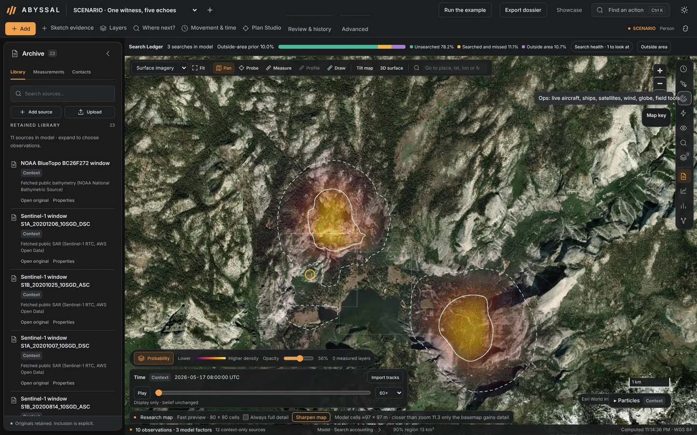

ABYSSAL is about 60,000 lines of Python, 40,000 lines of Python tests and 70,000 lines of TypeScript, written in roughly a month. I did not type most of it. I designed it, specified it, reviewed it, argued with it and decided what it was allowed to claim. The typing was done by AI coding agents, several of them, from different labs, sometimes working in parallel on separate branches.
That sentence makes some engineers uneasy, and they are right to be. Code that is cheap to write is cheap to get subtly wrong, and a probabilistic system is the worst possible place to be subtly wrong: a bug in a search map does not crash, it just sends people to the wrong valley with confidence. This last part is about how the project is organised to make that unlikely, the times it went wrong anyway, and what I think the whole thing is for.
The single most useful file in the repository is AGENTS.md. It is short, and most of it is ten invariants that no change may break without my explicit approval:
SCENARIO end to end and never enter a real case.Why invariants rather than a long specification? Because an AI agent is extremely good at producing a plausible implementation of whatever you describe, and the danger is the space of plausible-but-wrong implementations. A specification describes the happy path. An invariant fences off a whole region of the space of possible programs: whatever you build, it may not silently renormalise, it may not let a synthetic number into a real case, it may not let a detector touch the map. Invariants are also testable, which means the test suite becomes the enforcement mechanism rather than my attention span.
The second most useful file is docs/roadmap/KNOWN_INCOMPLETE.md, which every agent must read before starting and update in every pull request. It lists what is unfinished, unverified or deliberately imperfect, in plain sentences: which live services have never been reached from the build sandbox, which browser specs are marked as needing a rewrite, which numbers are analyst assumptions. It is the opposite of a marketing document, and it is the reason I trust the rest.
The third file, docs/ENGINE_AUDIT.md, is the one a statistician would read. Every model version, every likelihood, every approximation and every known inconsistency between engines is written down there, with a date. When one engine treats repeated searches as max-only with interpolated repeat credit, another as a shared latent detectability, and a third as a working/failed mixture, the audit has a table saying so and forbids combining them without a declared joint model.
It also records corrections, and I think that is the most important thing in it. Twice in November an adversarial review, whose only job was to find faults rather than to build, caught real bugs in the live model. On 17 November it found that model v5 had been silently applying the old v1 formula to positive clues whenever a quick search was present, skipping the prior normalisation described in Part 3. On 19 November it found that v5 was dropping the terrain context from the land walking prior whenever a search promoted a v4 case. Both were fixed with regression tests, and both entries say exactly which historical results could have changed and how to tell (the recorded code commit and input hashes distinguish them). A system that can be audited must include the record of when it was wrong.
Here are some of the ways the project went wrong. I include them because each one taught a rule that is now written down.
For weeks the dark theme was navy blue: background #0e1117, panels tinted teal, the offline sea a dark blue-grey, and the probability ramp a rainbow from blue through green to red. Nobody noticed, across hundreds of hours of agent work and review, that a tool mostly about the sea had made its probability map the colour of the sea. Low-probability cells and the water under them were indistinguishable; the green band looked like land; the rainbow had no perceptual order.

The fix took an afternoon. The lesson took longer: the people closest to a product are the worst placed to see it. Now an agent is periodically told to use the product as a stranger for an hour before writing any code, and to write down, bluntly, everything that confuses it.
An early version of the orbital tools shipped with two-line element sets for real, named satellites. They had been typed by hand. Every one failed its checksum. They looked exactly like real data and would have produced pass predictions with real-looking times. They were worse than no data, because they were false precision wearing a real name. Now there are no built-in real orbits: a person explicitly fetches them, each is validated, and until then the satellites are named as fictional. Rule: never show invented data under a real name.
An agent added "tactical" display styles: thermal, night-vision green, amber CRT. They looked great. They were implemented as CSS filters on every canvas, which meant they also recoloured the probability ramp, so a night-vision view showed the posterior in shades of green whose ordering no longer meant anything. They were also named after real military sensor products, implying a capability that did not exist. Now they restyle only the basemap through the map library's paint properties, never the probability or evidence colours, and they are named for what they are. Rule: decoration may never touch a number.
The first version of the expected-value layer reported a "90% tail-risk interval". It was a band from uncertainty in the probability of detection alone, with an illustrative spread. It said nothing about uncertainty in the map, the value or the cost. It is now labelled exactly that: a POD-only sensitivity band, not a calibrated tail. Rule: a label may not claim more than the computation.
The MH370 flight-path prototype reported a healthy effective sample size while its particles had collapsed onto a handful of ancestral paths; its answer changed with the random seed. It publishes nothing. Part 8 has the details and a lab that reproduces the failure. Rule: a method that has not converged does not get to produce a map, however good the map would look.
Those rules show up on screen in ways that are easy to miss and that I think matter more than any feature.
needs, never a green tick.The AF447 backtest in Part 8 is the clearest example: a sealed answer key, pre-discovery parameters only, a proper scoring rule, and a headline number followed immediately by six reasons not to cite it.
The process is deliberately light. There is one main branch. Every feature starts from it, goes on its own branch and arrives as one pull request, opened as a draft; agents never merge. Tests exist to protect mathematics and invariants rather than for their own sake: about 2,500 Python tests, including slow oracle tests that check samplers against known answers and golden files that freeze exact posterior bytes; 330 frontend unit tests; and 118 browser journeys that drive the real app in a headless browser and assert exact numbers on screen. Hosted continuous integration is currently off, so the real gate is a local verifier that runs everything on the exact head commit and writes a receipt.
The single most effective practice is boring: after every change, run the app and use it. Most of the bugs in the gallery above were invisible in the code and obvious on screen. The agents write the code; somebody has to look.
Search and rescue is the reason the project exists, and it is a noble and small market. The engine underneath it is more general: honest, auditable, multi-source probability over space and time, with a ledger of why it moved and what the next observation is worth. The question I keep coming back to is where that is worth paying for.
My current answer is a test: does someone take a position whose payoff depends on the tail of a distribution over where or when a physical thing is? If they only need a yes-or-no decision, a good classifier will do and calibration is a luxury. If the distribution itself is priced, its shape is money.
| Where a spatial distribution is priced | Why the tails matter | Fit |
|---|---|---|
| Marine and aviation insurance and reinsurance | Reserves and reinsurance layers are set on tails; recovery and location change the loss. | Direct: it is the original engine. |
| Physical commodity flows and sanctions compliance | Where a cargo is, when it arrives, whether a tanker went dark: arrival-time and position distributions move demurrage, freight and exposure. | Direct: the watchlist and the dark-vessel engine. |
| Salvage and recovery | Every sweep is a bet with a price and a payoff. | Direct, smaller. |
| Defence and security | Decisions are mostly thresholds; value is uncertainty removed per sensor-hour across many entities. | Partial: sells on audit and multi-target scale more than on calibration. |
That suggests two streams sharing one engine. The first turns the search workbench into an expected-value workbench for wrecks, aircraft and cargo, with a published calibration scoreboard: every look's predicted probability of detection logged against its outcome, every replayable historical case scored, reliability diagrams that a reinsurer or salvor can check. Nobody can fake that, and it is the only honest route to removing the words "analyst assumption" from the screen. The second points the same engine at many moving targets: vessels that go dark, tracked across successive satellite radar passes, with calibrated detection rates measured for free on the ships that do broadcast.
The physics engines in Part 6 are the bridge between them, and the next few months of work are already ordered: dark-vessel tracking across passes; real Sentinel-1 scenes calibrated against AIS; impact detection from ring waves and long-range ocean acoustics; debris back-tracking; sonar anomaly detection; magnetic dipole inversion.
I will end where the roadmap does. Software like this can grow features forever without ever being used for the thing it is for. So there is a written stop rule: if fewer than five outside practitioners, across at least two fields, have used ABYSSAL on a real or replayed case by late January 2027, feature work stops, and the engine is released openly with a written method.
If you search for things for a living, whether people, aircraft, ships, wrecks, cargo, or anything else that hides, I would like you to try it and tell me where it is wrong. That is the most valuable evidence the project can admit.
1 · A tour · 2 · A map that refuses to lie · 3 · The arithmetic of not finding · 4 · Five echoes, one witness · 5 · Where next, and when to stop · 6 · Signals from the deep · 7 · The operating picture · 8 · Three cases, two refusals · 9 · Building it honestly. All the interactive labs are collected on the series page.